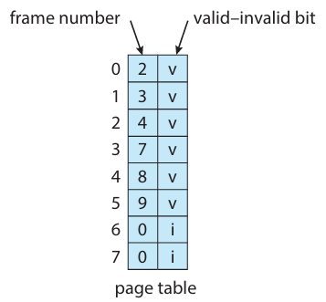
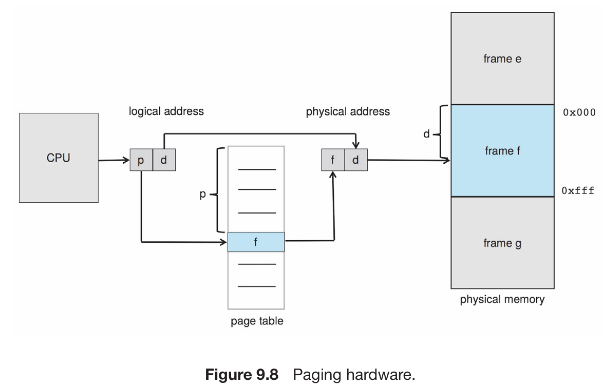

Address Translation
Pages
Fixed-sized blocks of logical/secondary memory. Pages represent a unit of information transfer between main memory and secondary storage. A page set is a process working set. A working set constantly changes as the process accesses different parts of memory.
Page Table
A data structure that enables the memory management unit (MMU) to translate logical addresses into physical addresses.
Physical Memory
The actual memory available to the computer, usually in the form of RAM. In paging, the physical, or main, memory splits into fixed-size blocks or page frames, each with a unique address. The frames are the same size as the pages used by the process.
Virtual Memory
Pure demand paging is a specific implementation of demand paging. The operating system only loads pages into memory when the program needs them. In on-demand paging only, no pages are initially loaded into memory when the program starts, and all pages are initially marked as being on disk.
Memory management unit (MMU)
A hardware component that translates logical addresses into physical addresses. The MMU also manages the allocation and deallocation of pages in memory.
Logical Address(virtual address)
When a program runs, the CPU generates a logical address for each page. The MMU translates logical into physical addresses.
Logical address space (virtual address space)
Logical address space (virtual address space)
Physical Address
Each frame within a physical memory has a unique physical address. Addresses represent a specific location of a process in actual memory.
Physical address space
The range of all possible physical addresses a system is able to reference. 